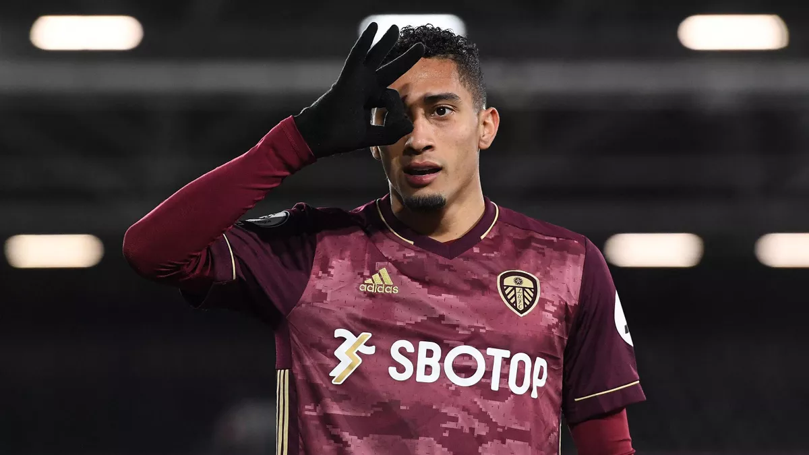

INFORMATIONS
CLASSEMENTS
CLENDRIER
Rankings
BUTEURS
PASSEURS
PREMIER LEAGUE - TOTTENHAM L'EMPORTE FACE À ASTON VILLA (0-2)
PREMIER LEAGUE - LEEDS S'IMPOSE À FULHAM (1-2)
CHELSEA PUNI EVERTON...UNE AUTRE VICTOIRE DE THOMAS TUCHEL
PREMIER LEAGUE : MENÉ 3-0 PAR WEST HAM, ARSENAL ARRACHE LE POINT DU NUL GRÂCE À LACAZETTE...
LES WOLVES ONT LEUR CR7 2.0: VOICI PEDRO NETO, LE SUCCESSEUR DE RONALDO...
LES MIRACLES N'EXISTENT PAS : CHANGER D'ENTRAINEUR POUR SE SAUVER RESTE LA PIRE DES IDÉES...
PREMIER LEAGUE - LIVERPOOL RETROUVE LE SOURIRE EN BATTANT WOLVERHAMPTON (0-1)
"IL EST TOTALEMENT CONSCIENT" : NOUVELLES RASSURANTES POUR RUI PATRICIO, TOUCHÉ À LA TÊTE...
PREMIER LEAGUE - WEST HAM TROP RÉALISTE POUR LEEDS (2-0)
MANCHESTER UNITED, LE MINIMUM SYNDICAL FACE À WEST HAM
PREMIER LEAGUE -CHELSEA SANS SOLUTION À LEEDS
PREMIER LEAGUE : LEICESTER SOLIDE TROISIÈME APRÈS SON SUCCÈS SUR SHEFFIELD UNITED (5-0)...
MANCHESTER CITY DÉVORE FULHAM ET S'ENVOLE EN TÊTE

 PREMIER LEAGUE - LIVERPOOL RETROUVE LE SOURIRE EN BATTANT WOLVERHAMPTON (0-1)
PREMIER LEAGUE - LIVERPOOL RETROUVE LE SOURIRE EN BATTANT WOLVERHAMPTON (0-1)
 PREMIER LEAGUE -CHELSEA SANS SOLUTION À LEEDS
PREMIER LEAGUE -CHELSEA SANS SOLUTION À LEEDS